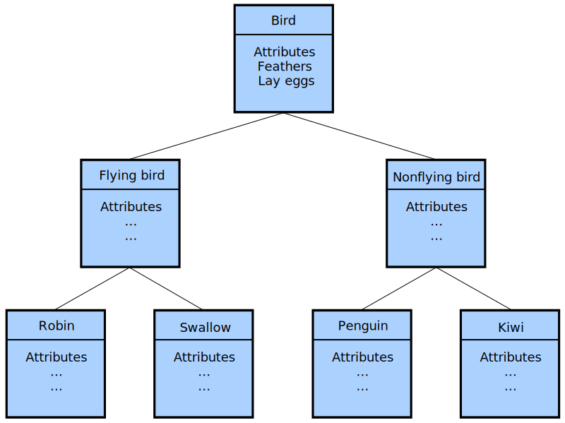

Beginning with OOP
- Object Oriented Programming is an approach that provides a way of modularizing programs by creating
partitioned memory area for both data and functions that can be used as templates for creating copies of
such modules on demand.
- Object-Oriented Programming (OOP) is a programming paradigm (pattern or model) in computer science that
relies on the
concept of classes and objects. It is used to structure a software program into simple, reusable pieces
of code blueprints (usually called classes), which are used to create individual instances of objects.
There are many object-oriented programming languages, including JavaScript, C++, Java, and Python.
Features of OOP are:
- Emphasis is on data rather than procedure.
- Programs are divided into what are known as objects.
- Data structures are designed such that they characterize the objects.
- Functions that operate on the data of an object are tied together in the data structure.
- Data is hidden and cannot be accessed by external functions.
- Objects may communicate with each other through functions.
- New data and functions can be easily added whenever necessary.
- Follows bottom-up approach in program design.
Difference between POP (Procedural Oriented Programming) and OOP (Object Oriented Programming)
Basic concepts of OOP
It is necessary to understand some of the concepts used extensively in OOP
These include:
- Objects
- Classes
- Data abstraction and encapsulation
- Inheritance
- Polymorphism
- Dynamic binding
- Message passing
Classes
- In a nutshell, classes are essentially user-defined data types. Classes are where we create a
blueprint for the structure of methods and attributes. Individual objects are instantiated from
this blueprint.
- The entire set of data and code of an object can be made a user-defined data type with the help
of a class.
Objects
- Objects are instances of a class created with specific data.
- Objects are the basic run-time entities in an object-oriented system.
- They may represent a person, a place, a bank account, a table of data or any item that the
program has to handle.
- Programming problem is analyzed in terms of objects and the nature of communication between
them.
- Program objects should be chosen such that they match closely with the real-world objects.
- When a program is executed the objects interact by sending messages to one another.
Data Abstraction and Encapsulation
- The wrapping up of data and functions into a single unit (called class) is known as
encapsulation.
- Data encapsulation is the most striking feature of a class.
- The data is not accessible to the outside world, and only those functions which are
wrapped in the class can access it.
- These functions provide the interface between the object's data and the program.
- This insulation of the data from direct access by the program is called data hiding or
information hiding.
- Abstraction refers to the act of representing essential features without including the
background details or explainations.
- Classes use the concept of abstraction and are defined as a list of abstract attributes
such as size, weight and cost, and functions to operate on these attributes.
- They encapsulate all the essential properties of the objects that are to be created.
- The attributes are sometimes called data members because they hold information.
- The functions that operate on these data are sometimes called methods or member
functions.
- Since the classes use the concept of data abstraction, they are known as Abstract Data Types.
Inheritance
- Inheritance is the process by which objects of one class acquire the properties of objects of
another class.
- It supports the concept of hierarchical classification.
- For example, the bird 'robin' is a part of the class 'flying bird' which is again a part of the
class 'bird'.
- The principle behind this sort of division is that each derived class shares common
characteristics with the class from which it is derived as illustrated below.

- In OOP, the concept of inheritance provides the idea of reusability. This means that we can add
additional features to an existing class without modifying it. This is possible by deriving a
new class from the existing one. The new class will have the combined features of both the
classes.
- The real appeal and power of the inheritance mechanism is that it allows the programmer to reuse
a class that is almost, but not exactly, what he wants and to modify the class in such a way
that it does not introduce any undesirable side-effects into the rest of the classes.
Polymorphism
- Polymorphism is another important OOP concept. Polymorphism, a Greek term, means the ability to
take more than one form.
- Polymorphism provides a method of creating multiple forms of a function by using a single
function name.
- This is achieved using function overloading and operator overloading. Function overloading
allows multiple functions to have the same name but different arguments, and the appropriate
function to be called is determined at compile-time based on the number and types of arguments
passed to it. Similarly, operator overloading allows operators such as +, -, *, /, etc. to be
used with user-defined data types.
Dynamic Binding
- Binding refers to the linking of a procedure call to the code to be executed in response to the
call.
- Dynamic binding (also known as late binding) means that the code associated with a given
procedure call is not known until the time of the call at run-time.
Message Passing
- An object-oriented program consists of a set of objects that communicate with each other.
- The process of programming in an object-oriented language, therefore, involves the following
basic steps:
- Creating classes that define objects and their behaviour,
- Creating objects from class definitions, and
- Establishing communication among objects.
- Objects communicate with one another by sending and receiving information much the same way as
people pass message to one another.
- The concept of message passing makes it easier to talk about building systems that directly
model or simulate their real-world counterparts.
Benefits of OOP
OOP offers several benefits to both the program designer and the user. Object-oriented contributes to the
solution of many problems associated with the development and quality of software products. The
principal advantages are:
- Through inheritance, we can eliminate redundant code and extend the use of existing classes.
- We can build programs from the standard working modules that communicate with one another, rather
than having to start writing the code from scratch. This leads to saving of development time and
higher productivity.
- The principle of data hiding helps the programmer to build secure programs that cannot be invaded by
code in other parts of the program.
- It is possible to have multiple instances of an object to co-exist without any interference.
- It is possible to map objects in the problem domain to those in the program.
- It is easy to partition the work in a project based on objects.
- Object-oriented systems can be easily upgraded from small to large systems.
- Software complexity can be easily managed.
- Message passing techniques for communication between objects makes the interface descriptions with
external systems much simpler.
Applications of OOP
- The most popular application of object-oriented programming, up to now, has been in the area of user
interface design, such as windows. Hundreds of windowing systems have been developed using OOP
techniques.
- Real-business systems are often much more complex and contain many more objects with complicated
attributes and methods. OOP is useful in these types of applicaitons because it can simplify a
complex problem. The promising areas of applications of OOP include:
- Real-time systems
- Simulation and modeling
- Object-oriented databases
- Hypertext, hypermedia and expertext
- AI and expert systems
- Neural networks and parallel programming
- Decision support and office automation systems